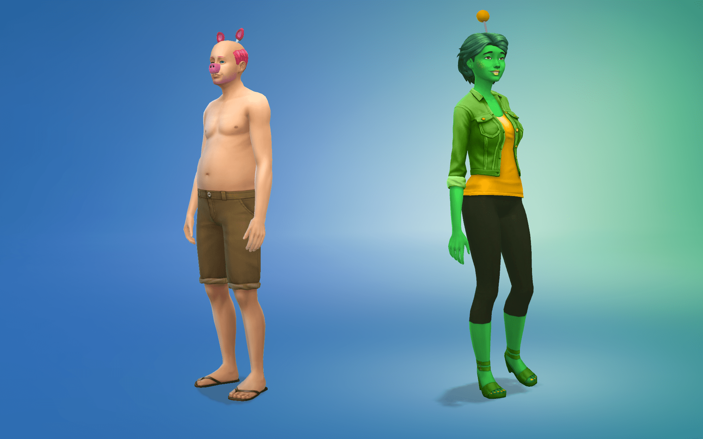

FNAF Happy Frog and Pigpatch
Mid-sized and mediocre.
I've added the download for these two separately for those that only want one animatronic.
Pigpatch
Pigpatch only has one item which is found in hats. This is the ears, nose, eye, and tail. Some adjustment might be needed to fit the nose to the face, and the fake eye does not scale with the sims original eyes.
Happy Frog
Happy Frog comes with 4 items. Whilst the antenna is the only item that matches her from FNAF, I recoloured some base game items to match her colour scheme.
- Antenna (found in hats)
- Shoes
- Jacket (found in tops)
- Cardigan (found in full body)
Alternatively, you can download the onesie that Lauren used here.
Download Happy Frog